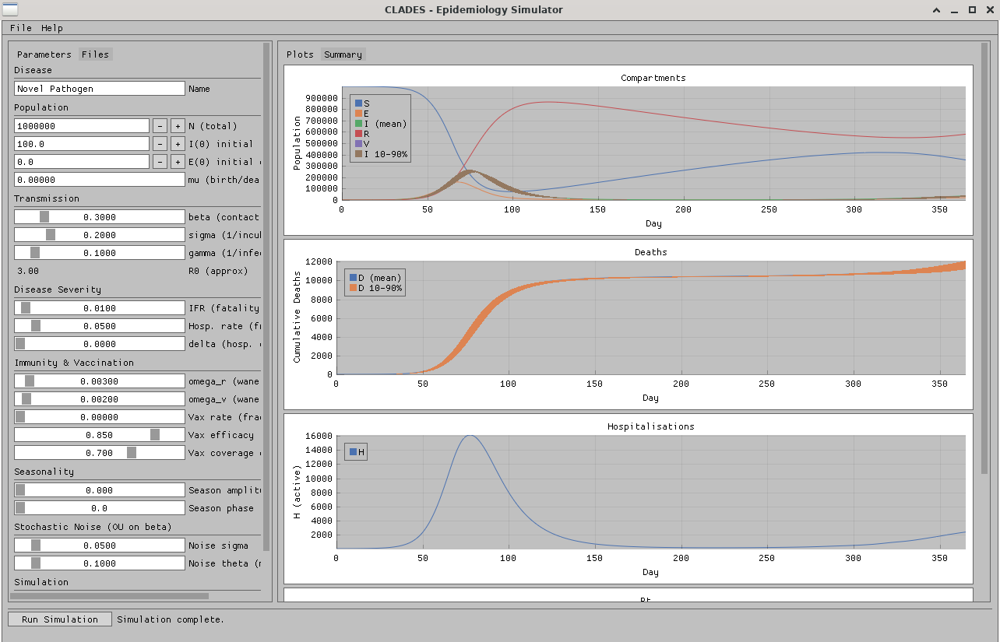
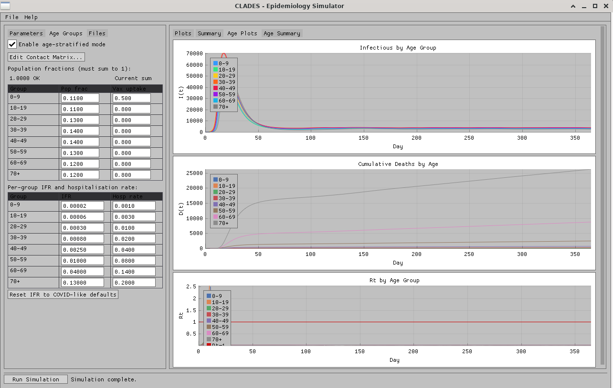

C++17 / Dear ImGui / SDL2 / OpenGL3 — x86_64 Linux, cross-platform
Stochastic SEIVRD compartmental model with Ornstein-Uhlenbeck noise on β, age-stratified POLYMOD contact mixing, waning immunity, and vaccination sub-compartments. Results are 5-run ensemble averages.

Left pane contains all model parameters. Right pane shows four plots after a run: S/E/I/R/V compartments, cumulative deaths with 10–90% ensemble band, active hospitalisations, and Rt.
8 age bands (0–9 through 70+) with an editable 8×8 POLYMOD contact matrix. Per-group IFR, hospitalisation rate, and vaccine uptake. Separate plots for I(t), D(t), and Rt(t) per group.

Extended SEIVRD compartmental model. Deterministic backbone with stochastic SDE layer (Ornstein-Uhlenbeck on β), integrated via Euler-Maruyama.
Homogeneous: λ = β · (I + 0.3·E) / N Age-stratified: λ_i = β · ∑_j C[i,j] · I_j / N_j (WAIFW) OU noise: dβ = θ·(β_0 - β)·dt + σ·β·dW Integration: Euler-Maruyama, dt = 0.5 d (configurable)
| Symbol | Description | Exits to |
|---|---|---|
| S | Susceptible | E (infection), V (vaccination) |
| E | Exposed / latent | I (at rate σ = 1/incubation) |
| I | Infectious | R (1−IFR), D (IFR), both at rate γ |
| H | Hospitalised (flow tracker) | resolved at 1/14 d, extra mort δ |
| R | Recovered | S (waning ωr) |
| V | Vaccinated | E (breakthrough, efficacy-reduced), S (waning ωv) |
| D | Dead (absorbing) | — |
8 groups: 0–9, 10–19, 20–29, 30–39, 40–49, 50–59, 60–69, 70+. Contact matrix C[i,j] defaults to POLYMOD European average (Mossong 2008, Prem 2017). IFR follows a COVID-like age gradient as default; all values user-editable. Vaccination budget distributed proportionally to group-level uptake fractions, capped at configurable coverage ceiling per group.
N_RUNS=5 independent Euler-Maruyama integrations from distinct MT19937-64 seeds. Time series averaged pointwise. 10th and 90th percentile bands computed per compartment. Removes single-seed luck without masking structural uncertainty.
| Parameter | Default | Description |
|---|---|---|
| β | 0.3 | Baseline contact × transmission probability (per day) |
| σ | 0.2 | 1 / incubation period (E→I rate) |
| γ | 0.1 | 1 / infectious period |
| IFR | 0.01 | Infection fatality ratio |
| hosp_rate | 0.05 | Fraction of I requiring hospitalisation |
| ωr | 0.003 | Waning rate, recovered (~1 yr) |
| ωv | 0.002 | Waning rate, vaccinated |
| vax_rate | 0.0 | Daily fraction of S vaccinated |
| vax_eff | 0.85 | Vaccine efficacy against infection |
| season_amp | 0.0 | Cosine forcing amplitude on β |
| σOU | 0.05 | OU noise amplitude (fraction of β) |
| θOU | 0.1 | OU mean-reversion speed |
CMake 3.18+, C++17 compiler, OpenGL. SDL2 and Dear ImGui fetched automatically via FetchContent if not present on the system.
# Linux (primary target) sudo apt install libsdl2-dev libgl-dev # optional; FetchContent fallback cmake -B build -DCMAKE_BUILD_TYPE=Release cmake --build build -j$(nproc) ./build/clades # Windows / macOS - identical cmake -B build -DCMAKE_BUILD_TYPE=Release cmake --build build
| File | Role |
|---|---|
| model.hpp / model.cpp | Homogeneous SEIVRD integrator, ensemble runner, all core types |
| age_strat.hpp / age_strat.cpp | Age-stratified integrator, POLYMOD defaults, per-group ensemble |
| io.hpp / io.cpp | INI param save/load for base and age params |
| main.cpp | Dear ImGui frontend, all UI panels, SDL2/OpenGL loop |
| Library | Version | Purpose |
|---|---|---|
| Dear ImGui | 1.90.8 | Immediate-mode GUI |
| ImPlot | 0.16 | Plot widgets inside ImGui |
| SDL2 | 2.30.2 | Window, OpenGL context, input |
CLADES — open source, C++17 | github